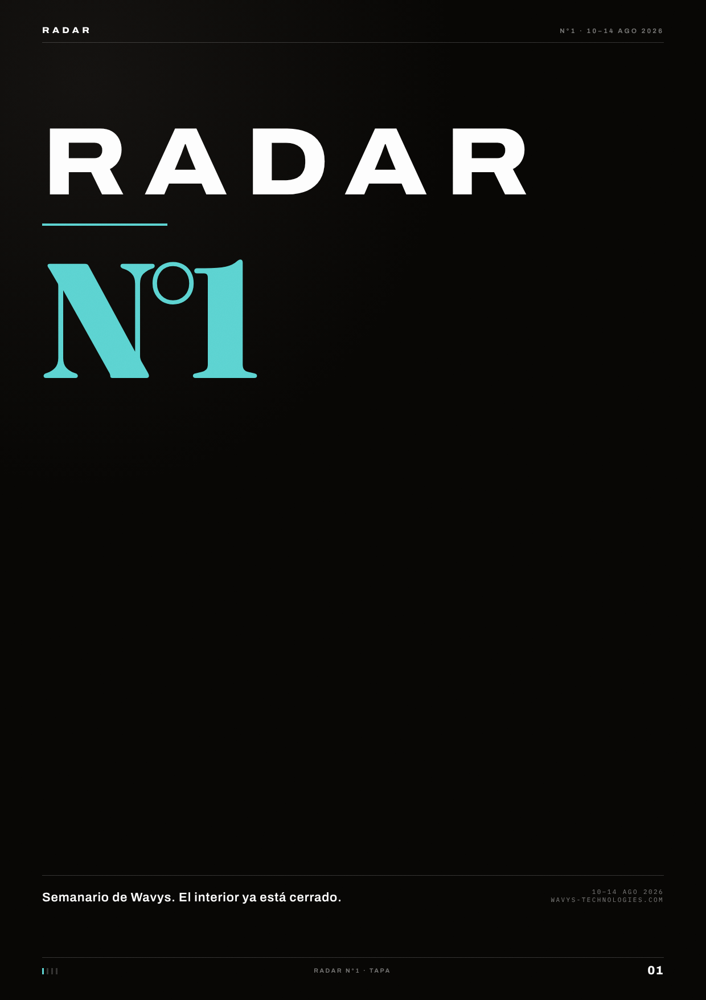
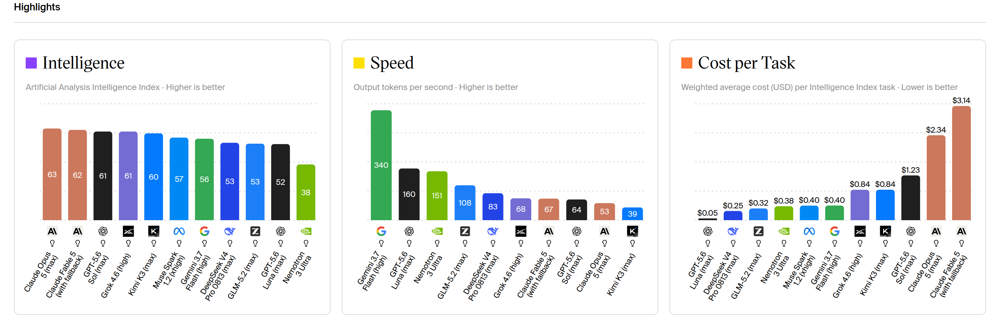
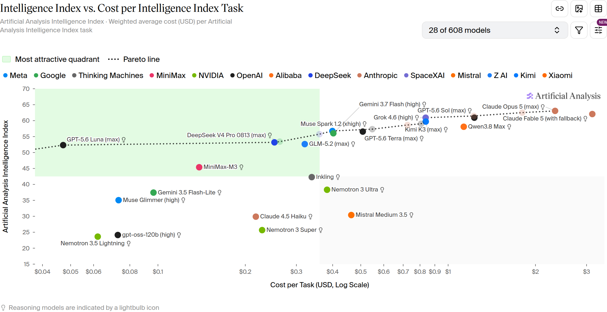

Carta del editor · Humano
Esta semana no vi más IA
Si lo usas todos los días, te acaba cambiando el oficio.
Hola.
Esta semana no vi “más IA”. Vi el chat que ya usas, la hoja que es tu sistema, el cliente que se enfría, y los datos de tu gente. Te las dejo en una sola revista, por secciones, para que no persigas 20 hilos el domingo a la noche.
Da igual si mandas paquetes, atiendes mascotas, construyes o tienes una oficina. Si el negocio todavía camina a mano, esto te habla.
El centro de este número es uno solo: el 1 de octubre WhatsApp deja de regalar las respuestas. Me senté a recorrerlo como si fuera mi operación. Antes y después, las otras noticias de la semana. Al final, el tablero de IA, con más de un gráfico.
Phil
Phil · agosto 2026 · Wavys Technologies · wavys-technologies.com
Señal · 13 ago 2026 · Google · OpenAI
Se metió al correo
Google sacó Gemini 3.7 Flash. No lo leí como “otro modelo”. Lo leí cuando dijeron que Spark, con ese modelo, entra a Gmail y al Calendar. Resume, propone horario, mueve. El anuncio es de modelos. El cambio, si te toca, es que la IA se sentó en el correo que ya abres.
Lo probé ahí. Sirve cuando el pedido, la cita o el seguimiento ya viven en ese hilo. Si tu operación está en una hoja y en el grupo del equipo, el modelo nuevo no te cambia el lunes. Se quedó en otra casa.
un silencio y cuelgan
TechCrunch · OpenAI · 13 ago 2026 · Ultrafast
OpenAI sacó Ultrafast: el mismo GPT-5.6 Sol, hasta 14 veces más rápido. Dicen hasta 750 tokens por segundo. Lo están soltando en preview, con Cerebras, para unos pocos, y lo nombran para soporte, incidentes, comercio.
Yo no me quedé en el 14x. Me quedé en la llamada. Un silencio largo y cuelgan. Si algún día pones voz en la atención, que no se ponga a pensar diez segundos. Un bot lento es peor que no tener bot: el cliente ya escuchó que “hay sistema”, y el sistema lo dejó esperando.
blog.google/innovation-and-ai/models-and-research/gemini-models/introducing-gemini-3-7-flash/
techcrunch.com/2026/08/13/openai-introduces-ultrafast-a-new-mode-that-makes-gpt-5-6-sol-work-at-14x-the-speed/
Tema central · WhatsApp · Meta · precios
deja de regalar
El 1 de octubre las respuestas que no son plantilla oficial dejan de ser un favor. Cada una entra a la cuenta.

Hasta ahora el chat era “gratis” en la práctica.
La hoja es el sistema
- Fuente
- Meta · WhatsApp Business, precios de mensajes que no son plantilla. developers.facebook.com/documentation/business-messaging/whatsapp/pricing/non-template-messages
- Gratis desde
- 1 nov 2024Meta dejó de cobrar las líneas de servicio.
- Vuelven a la cuenta
- 1 oct 2026Por mensaje. Por mercado.
- Tarifas
- Meta las publica el 1 de septiembre. No las voy a adivinar acá: sin precio en soles.
Hasta ahora escribías tú, escribía el cliente, alguien contestaba “ya te confirmo” veinte veces al día y nadie miraba la cuenta.
Esas líneas de servicio que no son plantilla oficial Meta no las cobraba desde el 1 de noviembre de 2024. El 1 de octubre de 2026 vuelven a la cuenta. Por mensaje. Por mercado.
Las tarifas de servicio se publican el 1 de septiembre. No las voy a adivinar acá, y si alguien ya te pasó un número en soles, te lo inventó.
No lo leí como “manda menos”. Mandar menos es perder al cliente. Lo leí así: el sistema no puede contestar a lo loco. Tiene que saber qué es ruido, qué es una confirmación y qué necesita una persona.
Lo que se rompe el 1 de octubre no es tu WhatsApp. Es la costumbre de contestar sin mirar la hoja.
Cuatro casos
Cuatro negocios distintos, una sola pregunta que llega al chat. Lo que cambia es de dónde sale la respuesta.
01 · Courier · reparto
“¿Ya salió mi pedido?”
Llega veinte veces al día. La respuesta fácil es “ya te confirmo”, y después nadie confirma. Desde el 1 de octubre esa cadena la pagas dos veces. Si la hoja tiene estado, el chat lo lee y contesta una vez. Si no lo tiene, escala a una persona: diez mensajes de “no sé” no son atención.
02 · Veterinaria · mascotas
“¿Tienen hora el sábado?”
El chat pregunta lo mínimo —qué mascota, para qué, qué día— y después mira la agenda. Si hay hueco, lo ofrece. Si no hay, no promete. Prometer un sábado que no existe cuesta el mensaje y cuesta el cliente.
03 · Obra · cotización
“Pásame precio de 20 bolsas”
El chat junta qué, cuántas y a qué distrito, y arma la ficha. El número lo manda una persona, una sola vez. Sin ficha, la cotización se vuelve veinte mensajes y ninguno cierra.
04 · Oficina · grupo del equipo
40 sin leer
Cuarenta mensajes sin leer y tres personas contestando lo mismo. Saca la atención al cliente del grupo. Una puerta, un hilo, un estado.
Tema central · la cita y los datos
El arreglo no es un chatbot más lindo. Es que el chat, la ficha y el estado hablen.
Phil · sobre el 1 de octubre
Los datos que sí existen
Solo lo que Meta publicó. Nada de tarifas en soles, nada de estimados: el detalle sale el 1 de septiembre.
- Publicación
- 1 sept 2026Meta publica las tarifas de servicio. Hasta ese día, cualquier precio que te pasen es invento.
- Servicio
- 1 oct 2026Las respuestas de servicio que no son plantilla vuelven a la cuenta. Por mensaje, por mercado.
- Utility · ventana 24 h
- 1 oct 2026La plantilla utility dentro de la ventana de 24 horas vuelve a cobrarse. Era gratis desde el 1 de julio de 2025.
Sin tarifa en soles en esta página. Si aparece un precio local antes del 1 de septiembre, no es de Meta.
developers.facebook.com/documentation/business-messaging/whatsapp/pricing/non-template-messages
Antes del 1 de octubre
Tres reglas
No es una lista de buenas intenciones. Es lo que yo dejaría escrito en la operación antes de que el chat empiece a costar.
01
No “ya te confirmo” si no hay nada que confirmar.
Si no está en la ficha, no lo mandes. Escala. Un mensaje que promete y no cumple te cuesta dos veces: el mensaje y la llamada del cliente preguntando lo mismo.
02
Lo que se puede decir solo, en una línea corta.
Horario, estado del pedido, “recibí tu mensaje”. Eso lo dice el sistema y se acaba ahí. Sin saludo de tres párrafos, sin dos mensajes para lo que cabe en uno.
03
Lo que mueve plata o una cita, lo ve una persona.
El sistema prepara: junta los datos, arma la ficha, deja el estado listo. No cierra solo. Quien cobra o agenda es alguien de tu equipo.
Si esto queda escrito antes de octubre, el 1 de octubre no te cambia el mes: te cambia una costumbre.
— Phil
Más noticias · 12 ago 2026 · Claude · Thrive · Amazon
Más noticias
05a · Claude · 12 ago 2026
sin API
Claude trabaja dentro de Chrome, con tu sesión abierta. No hay que esperar a que alguien libere una API.
Lo usé para mirar un calendario en el navegador, sin integración de nada: la misma pantalla que abre tu equipo todos los días.
05b · Thrive · TechCrunch · 12 ago 2026
no es otro chat
Thrive levantó US$2 mil millones para meter IA en negocios que ya existen, no para sacar otra app de chat.
Es la misma apuesta que yo veo desde acá: el valor no está en abrir una ventana nueva, está en entrar donde ya se trabaja.
05c · Amazon · Twitch · 12 ago 2026
el default es sí
Amazon y Twitch: tus datos entrenan su IA salvo que te salgas a mano.
No es una multa ni un escándalo. Es una casilla que ya viene marcada, y el que no la revisa acepta sin querer.
claude.com/blog/cowork-chrome-side-panel
techcrunch.com/2026/08/12/openai-backed-thrive-holdings-raises-2b-to-bring-ai-to-the-enterprise/
techcrunch.com/2026/08/12/amazon-will-train-on-twitch-streamers-content-by-default-unless-they-opt-out/
Tablero de IA · índice y gráficos
Tablero de IA
Artificial Analysis Intelligence Index. Captura del 14 ago 2026 · artificialanalysis.ai
Índice de inteligencia · Benchmark AA · 14 ago 2026
Índice de terceros, no de Wavys. Grok entró esta semana. Gemini 3.7 Flash no tiene puesto acá: aparece en los gráficos de costo y velocidad.



Contratapa · nos leemos el viernes
Mira tu WhatsApp antes de octubre
Si esto te sirve para mirar tu WhatsApp antes de octubre, bien. Si quieres ver cómo se ve un sistema que vive en el chat y a la ficha, nos escribes y lo vemos en 30 minutos.
30 minutos, una llamada
https://cal.com/wavys-call/30min
Nos escribes, miramos tu chat y tu hoja, y sales con las tres reglas escritas.
Nos leemos el viernes que viene.